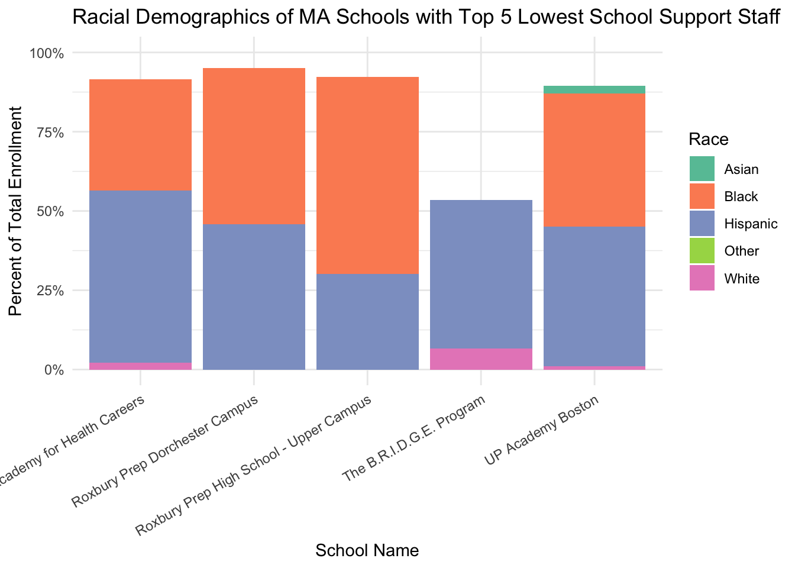

Analysis
Here we provide a detailed analysis using more sophisticated statistics techniques.

Motivation for Data Analysis
Our project aims to understand the complex factors influencing harassment, and bullying incidents across public schools in the United States. We start off our analysis on a high-level view of harassment and bullying nationally, but end up particularly focusing on how school-level resources (counselors, psychologists, security staff), student demographics, and geographic location contribute to reported incidents.
Given persistent racial, disability-related, and orientation-based disparities, our goal is to identify actionable patterns that can inform equity-focused educational reforms.
Research Questions
- Do schools with more support staff report fewer harassment incidents?
- How does harassment rate vary across different identity categories (e.g., race, disability, religion, sexual orientation)?
- Are geographic patterns evident - do some states or regions report higher normalized rates?
Exploration
One of the most pressing concerns that led us to analyze this data was to understand the groups (based on race, disability, religion, sexual orientation, etc.) that were most affected nationwide.
National-Level View
This map shows the normalized rate of allegations based on sexual orientation. Massachusetts, New York, and New Jersey all had high rates with closer to 10%. The northwest region showed very few or no reported cases.

This map highlights religion-based harassment allegations. While overall rates were lower compared to other categories, Massachusetts again stands out. States like Utah and Idaho had zero or near-zero cases.

This map displays allegations of harassment due to race, color, or national origin. Massachusetts once again leads with the highest number of allegations, followed closely by New York and California. The southeast and parts of the northwest had lower reported rates. However, these graphs fail to provide an accurate representation of the number of allegations within each of these categories (race, religion, sex) as this is only depicting the reported incidents. Unreported incidents likely in the northwestern states are not depicted in the data itself so we fail to make appropriate inferences and comparisons between the states themselves.
Relationship between School Support and Harassment Reports
Slope (β1): β1=−0.352, it indicates that a 1% increase in total support staff is associated with a 0.352% decrease in harassment allegations per 100 students. This negative elasticity suggests that more support staff correlates with fewer reported incidents.
Intercept (β0): This represents the expected log of allegations per 100 students when the log of total support staff is zero.
R^2 = 0.08 : This means that approximately 8% of the variability in harassment allegations per 100 students is explained by the model. While the relationship is statistically significant, other factors not included in the model likely influence the number of allegations.
| Metric | Value |
|---|---|
| R-squared | 0.0804672 |
| Adjusted R-squared | 0.0804210 |
| Sigma | 1.0540021 |
| F-statistic | 1742.0380402 |
| p-value | 0.0000000 |
| Degrees of Freedom | 1.0000000 |
The linear regression model reveals a statistically significant relationship between log total school support staff and log harassment allegations per 100 students. With an R-squared of 0.0805, the model explains approximately 8% of the variation in the outcome, suggesting a modest explanatory power. The adjusted R-squared is nearly identical, indicating that the model is not overfitting despite its simplicity. The F-statistic is high (1742.04) with a p-value effectively zero, confirming that the predictor contributes meaningfully to explaining variation in the response variable. The residual standard error (sigma) is about 1.05 on the log scale, indicating the typical prediction error. Overall, while the model is statistically strong, its predictive power is limited, highlighting the need for additional explanatory variables to better understand harassment reports in schools.


Our model residuals are mostly normal, especially in the center, which is reassuring for coefficient inference. But the tail deviations suggest the presence of outliers or non-normality in extreme values. Thus, Inferences involving prediction intervals or extreme outcomes may be less reliable. Therefore, though the model appears reasonable in form, but the presence of heteroskedasticity suggests we might consider using robust standard errors when reporting p-values and confidence intervals.
How School Support and Student Race Predict Harassment Allegation Rates

# A tibble: 8 × 5
term estimate std.error statistic p.value
<chr> <dbl> <dbl> <dbl> <dbl>
1 (Intercept) 1.16 0.0905 12.9 1.50e- 37
2 log_support -0.369 0.0121 -30.6 2.48e-197
3 RaceAS -0.159 0.0983 -1.62 1.06e- 1
4 RaceBL 0.153 0.0924 1.65 9.82e- 2
5 RaceHI -0.801 0.0930 -8.61 8.27e- 18
6 RaceHP 0.885 0.216 4.11 4.01e- 5
7 RaceTR 0.415 0.0951 4.36 1.32e- 5
8 RaceWH -1.45 0.0928 -15.6 2.06e- 54
Trends and Correlations
- AM (Red): Shows a weak and slightly negative correlation between school support and harassment rates. Increased support does not significantly change allegations among American Indian/Alaska Native students.
- AS (Brown): Displays a slight negative correlation. Allegation rates decrease with more support, though the relationship is not statistically strong.
- BL (Green): Shows a modest downward trend, suggesting that increased support staff may be linked to lower harassment allegations among Black students, though with considerable variability.
- HI (Teal): Exhibits a clearer negative correlation. Schools with higher support tend to report fewer harassment cases involving Hispanic students.
- HP (Light Blue): Shows a near-flat to slightly positive slope. This group reports higher baseline harassment rates, and increased support staff does not appear to lower the rate significantly.
- TR (Purple): Displays a moderately negative trend, implying a potential benefit of school support staff in reducing harassment against multiracial students.
- WH (Pink): Has one of the steepest negative slopes. Greater support staff presence is strongly associated with fewer allegations among White students.
Across racial groups, schools with greater staff support — including counselors, psychologists, and security, tend to report fewer race-based harassment allegations per 100 students. This trend suggests that investments in support personnel may contribute to safer, more inclusive school environments, particularly for groups like White, Hispanic, and Multiracial students. However, the impact is not uniform, and further investigation may be needed for groups such as Native Hawaiian/Pacific Islanders, who experience high baseline rates and limited benefit from staffing increases.
Massachusetts Focus
Warning in stat_poly_eq(aes(label = paste(..eq.label.., ..rr.label.., sep =
"~~~")), : Ignoring unknown parameters: `label.x.npc` and `label.y.npc`Warning: The dot-dot notation (`..eq.label..`) was deprecated in ggplot2 3.4.0.
ℹ Please use `after_stat(eq.label)` instead.
Regardless of the missing data across multiple states, we noticed that Massachusetts had a lot of data, and also had the highest proportion of allegations compared to all states. Therefore, from these observations, we narrowed our focus down to the state of Massachusetts, and identified key trends in relation to school support resources (counselors, psychologists, security), and demographics.
This log-log regression focuses on schools in Massachusetts and shows a modest negative association between school support staffing and harassment allegations per 100 students. The downward slope (ùë¶ = ‚àí0.376 ‚àí 0.325ùë•, ùëÖ¬≤ = 0.08) suggests that schools with more counselors, psychologists, and security staff tend to report fewer harassment incidents, though the relationship is relatively weak. Still, the trend aligns with our broader hypothesis that greater support infrastructure may help create safer school environments.
Min. 1st Qu. Median Mean 3rd Qu. Max.
-9.000 1.167 2.100 3.267 4.000 37.360 # A tibble: 10 × 2
SCH_NAME TOTAL_SUPPORT
<chr> <dbl>
1 Newbury Elementary 37.4
2 B M C Durfee High 33.8
3 Weymouth High School 32.7
4 Gr Lowell Regional Vocational Technical 30
5 Brockton High 29.8
6 Cambridge Rindge and Latin 29.4
7 Lawrence High School 25.8
8 New Bedford High 25.8
9 Lowell High 25.2
10 Taunton High 21.5# A tibble: 10 × 6
SCH_NAME Asian Black Hispanic White Other
<chr> <dbl> <dbl> <dbl> <dbl> <dbl>
1 Worcester Secure Treatment 0 0 0 0 0
2 Commonwealth Secure Detention 0 0 0 0 0
3 Sharp Transistion Revocation Unit 0 0 0 0 0
4 Butler Center 0 0 0 0 0
5 Brockton Revocation 0 0 0 0 0
6 Roxbury Prep High School - Upper Campus 0 62.2 30.1 0 0
7 Roxbury Prep Dorchester Campus 0 49.1 45.9 0 0
8 Kennedy Academy for Health Careers 0 35.1 54.3 2.1 0
9 UP Academy Boston 2.3 42.1 44 1 0
10 The B.R.I.D.G.E. Program 0 0 46.7 6.7 0
# A tibble: 5 × 6
SCH_NAME Asian Black Hispanic White Other
<chr> <dbl> <dbl> <dbl> <dbl> <dbl>
1 Brockton High 2.4 62 17 14.2 4.5
2 Lawrence High School 2.9 0 92.1 0 0
3 Cambridge Rindge and Latin 10.3 27.3 15.2 37.2 10
4 Lowell High 29.6 11 35.1 20.8 3.9
5 Gr Lowell Regional Vocational Technical 17.4 5.7 36.7 36.8 3.4
The first graph shows that schools in Massachusetts with the lowest levels of school support staff tend to serve predominantly Black and Hispanic student populations, with very low proportions of White or Asian students. In contrast, the second graph reveals that schools with the highest levels of support staff exhibit more racial diversity, with some having a significantly higher proportion of White and Asian students. This contrast suggests a potential equity gap, where schools serving more students of color have less access to support resources.
Conclusion
Our analysis finds that schools with more support staff (counselors, psychologists, and security) tend to report slightly fewer harassment incidents, particularly in Massachusetts, although the effect is modest. Racial disparities are also evident: schools with high proportions of non-White students often have fewer support resources, raising equity concerns. While increased staffing is weakly correlated with improved outcomes, this analysis highlights the importance of targeted, equity-focused interventions to address harassment and disciplinary disparities across student demographics.
Challenges and Limitations
One key limitation is the underreporting of incidents, particularly in states with low reported rates (e.g., northwestern states), which may skew comparisons. Additionally, the data only reflects documented cases, leaving gaps in understanding the full scope of harassment and bullying. Another challenge is the lack of granularity in school-level resource allocation, making it difficult to directly correlate support staff presence with incident rates. Finally, demographic disparities in reporting (e.g., male vs. female reports) may introduce bias in interpreting which groups are most affected.